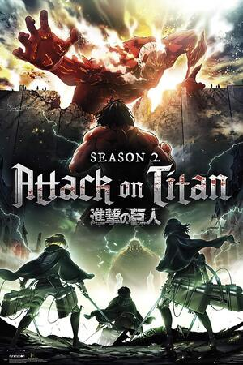
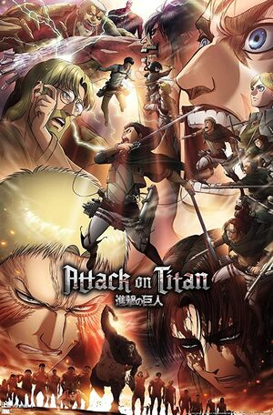
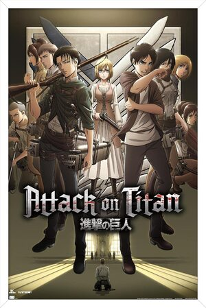

Season 1:
AoT begins with the introduction of humanity living inside three concentric walls, namely Wall Maria, Wall Rose, and Wall Sina, as they seek refuge from Titans - humanoid creatures who consume humans for no apparent reason. The story follows Eren Yeager, his adoptive sister Mikasa Ackerman, and their friend Armin Arlert as they witness the fall of Wall Maria and the death of Eren's mother by the hands of Titans. Later, they join the Survey Corps, a military organization tasked with exploring outside the walls and fighting Titans. In the end, the Survey Corps discovers that Titans are actually humans transformed by a mysterious power.

Season 2:
In season 2, the Survey Corps continue their investigation into the Titans' true nature. They face new Titans with unique abilities, including the Beast Titan, who can control other Titans, and the Colossus Titan, who can produce massive amounts of steam. Meanwhile, Christa Lenz, a member of the Survey Corps, reveals her true identity as Historia Reiss, a member of the Reiss family, who holds the secret to the Titans' origins. Eren, who also has the power to transform into a Titan, discovers that he possesses the "Coordinate," a power that can control other Titans. The season ends with the Survey Corps learning that Titans were created by an Eldian named Ymir Fritz, who gained the power of the Titans through a deal with the "source of all organic matter."

Season 3 (Part 1):
In the first part of season 3, the Survey Corps uncover the truth behind the history of their world. They learn that Eldians were once an empire that ruled the world with the power of the Titans but were overthrown by a coalition of other nations, known as the Great Titan War. The Eldians were subsequently forced to live in ghettos, and their children were taken away to be turned into Titans. The Survey Corps also discovers that the government of Paradis Island, where they live, has been lying to them about the true nature of the Titans and the world outside the walls.

Season 3 (Part 2):
In the second part of season 3, the Survey Corps, along with members of the Scout Regiment, overthrow the corrupt government and the military police. They also face off against the Beast Titan, who is revealed to be Zeke Yeager, Eren's half-brother, and the holder of the "Beast Titan" power. Meanwhile, Eren and his friends discover a hidden basement in his house, where they learn the truth about their world's history and the origins of the Titans. They find out that the first Titan, Ymir Fritz, gained her powers after coming into contact with an entity called the "source of all organic matter." Eren also discovers that his father, Grisha Yeager, was the one who stole the power of the Founding Titan from the Reiss family and gave it to him.

Season 4:
The final season of Attack on Titan takes a significant departure from previous seasons in its storytelling, with a time skip and a change in perspective. The season shifts its focus to the nation of Marley, a powerful nation across the sea that has been at war with Paradis Island for years. The main character of this season is Gabi Braun, a Marleyan Warrior candidate who seeks to inherit the Armored Titan power from her predecessor, Reiner Braun.
As the season progresses, Gabi and her fellow Warriors are sent to Paradis Island on a mission to retrieve the Founding Titan, the most powerful Titan in existence. The season explores themes of war, racism, and the morality of violence as the characters struggle to navigate a complex world where everyone is fighting for their own survival.
Meanwhile, the story also follows Eren Yeager, the protagonist of the series, as he fights a brutal war against Marley with the Survey Corps. Eren has now become the holder of both the Founding Titan and the Attack Titan, and his powers have grown more potent than ever before. However, his motives for the war and his ultimate goals remain shrouded in mystery, leaving his friends and allies in the dark about his true intentions.
As the season progresses, the story becomes increasingly complex, with political intrigue and a deep exploration of the history and lore of the world of Attack on Titan. Many new characters are introduced, and old characters are brought back into the fold as the season builds to its epic conclusion.
Ultimately, the final season of Attack on Titan ends with a bang, with a series of shocking revelations and plot twists that will leave fans talking for years to come. The season is an emotionally charged and powerful conclusion to one of the most iconic and influential anime series of all time.